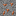

Rackcraft Field Manual
rackcraft:field_manual
This book. Right-click it to open. Click any Rackcraft ingredient in a recipe to jump to its page.
Crafting
BookCopper ingot
Rackcraft is about running a data center. Racks of servers mine RackCoin, but every kilowatt they draw comes back out as heat. Mine bauxite, smelt aluminum, blast iron into steel and quartz into silicon, then build up to your first rack. Keep an eye out for abandoned data centers on the surface: fix their cut cables and they start mining for you.
This book. Right-click it to open. Click any Rackcraft ingredient in a recipe to jump to its page.
Right-click any machine or cable for a live readout: power delivered against demand, generator fuel, battery charge, rack mining status, and fiber bandwidth. Sneak-right-click a machine to rotate it.

Reddish ore found between Y 0 and Y 64, in veins of up to seven blocks. Mine it with a stone pickaxe or better for Raw Bauxite; Fortune increases the drop and Silk Touch keeps the ore.
Unrefined aluminum ore. Smelt it in a furnace, or twice as fast in a blast furnace, to get Aluminum Ingots.
A light metal used for coolant pipes, fans, solar frames and cryogenic parts.
Iron refined in a blast furnace. It forms the chassis of nearly every machine.
Compact storage for nine Steel Ingots. Heavy builds such as the Core Router, Modular Reactor and Quantum Core use it as a structural frame.
Blast Nether Quartz to make it, or recycle a Failed Module. It is the base material for every chip.
One copper ingot makes six wires. Wire goes into circuit boards, scanners and repair kits.